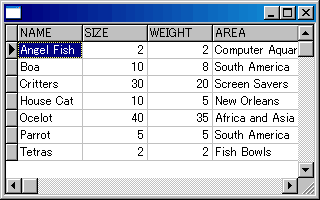
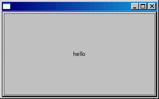
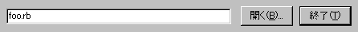

Apollo な日々 -- Windows で Ruby を始める
- はじめに
- Apollo とは
- Apollo の動作環境
- Apollo のインストール
- Apollo.exe の使い方
- Apollo.exe のカスタマイズ
- コンソール画面の使い方
- そのほかのインターフェイス
- まとめ
- 著者について
はじめに
もりきゅうです。仕事の合間にぼちぼち開発を進めている Apollo プロジェクトと、Apollo を使った Ruby プログラミングをご紹介します。
Apollo を用いると Windows 上で Ruby による GUI プログラミングを行えます。データベースも手軽に扱えます。
Apollo の現状としては、開発はつつがなく進めております (配布サイトをご参照ください)。ひとえに ML のみなさんのおかげです。ユーザからのフィードバックがなければ、Apollo はここまで実用的なものにはなっていなかったでしょう。また Windows 環境をお持ちの方は、この機会に試していただけると幸いです。 Kylix3 への対応は……ぼちぼち。
本稿では、Apollo の標準エディタである Apollo.exe の使い方を解説します。
Apollo とは
るびま創刊号で紹介していただいたように、Apollo は Delphi の Runtime ライブラリ である VCL (Visual Component Library) を元にして作った Ruby 拡張ライブラリです。
Delphi はボーランド社による開発環境です。 Delphi の実行時ライブラリ VCL (Visual Component Library) の Ruby 拡張ライブラリである Phi (ファイ) と、Phi を Delphi に組み込むためのライブラリから Apollo は成り立っています。現在の Apollo は Delphi6 (Delphi バージョン 6) の元で開発しています。
VCL にはさまざまな機能が含まれていますが、特に、GUI とデータベースに関してはその扱いやすさに定評があります。このような扱いやすさという特徴は Apollo にも引き継がれています。
例えば、フォーム (ウィンドウ) を開くには、Phi という拡張ライブラリ (これが Apollo のコアとなるライブラリです) を読み込み、Phi::Form オブジェクトを作り、Phi::Form#show でフォームを見せ、Phi.mainloop でイベントループを回すだけです。
require 'phi'
form = Phi::Form.new
form.show
Phi.mainloopデータベースを扱うには rdb という Phi 拡張ライブラリ (Phi の機能を用いる Ruby 拡張ライブラリ) を読み込みます。 データベーステーブルをグリッド上に表示する例は次のようになります。
require "phi"
require "rdb"
include Phi
include RDB
# connect to D:\Borland\Shared\Data\Animals.dbf (BDE)
database = Database.new 'D:\\Borland\\Shared\\Data', 'SYSDBA', 'masterkey'
table = Table.new database
table.table_name = 'Animals.dbf'
table.open
data_source = DataSource.new table
form = Form.new
grid = DBGrid.new form
grid.align = Phi::AL_CLIENT
grid.data_source = data_source
form.show
mainloop
Fig. dBASE ファイルを開いてグリッド表示してみた
書きやすそうではありませんか。
さらに GUI コンポーネントに対して Ruby の継承や Mix-in が使えるので、一段と書きやすくなっています。 また、単に Delphi ライブラリをラップするだけでなく、Proc・ブロック・イテレータ・例外処理・特異メソッド・インデクサ ([] []= によるアクセス) など、Ruby 的な記述が行えるように配慮して実装されています。
Delphi で書かれた拡張ライブラリであることも Apollo の大きな特徴です。 Ruby を Delphi から呼び出すための Unit (Delphi で書かれたソース) を Ruby のライセンスで提供しているので、Apollo を全て取り込まなくても Ruby を呼び出すことができます。1
Apollo の動作環境
Apollo の動作環境は OS: Windows 95,98,ME,2000,XP です。Windows 版の Delphi が動作する環境であれば動作します。
Apollo のインストール
最もお手軽なのは MSI 版をインストールすることです。配布サイトからファイルをダウンロードしてから、ファイルをクリックして実行するとインストールが始まります。インストール方法として標準・カスタムから選択できますが、普通は標準を選べば問題ないでしょう。標準では C:\Program Files\Apollo というフォルダが作られ、この中にインストールされます。2
MSI 版以外の配布形態として zip 版が用意されています。これはソースも含めて zip 形式で圧縮したもので、Delphi6 をお持ちであればご自分でビルドすることができるようになっています。
パスの設定
Apollo はコマンドライン上でも実行できます。そのためにパス (PATH という環境変数) を設定しておくと便利です。
MSI 版で Apollo をインストールしたときは、スタートメニューの中に Apollo というフォルダが用意され、その中に Apollo と set_path_for_ruby というアイコン (ショートカット) が作られます。パスの設定を簡単に済ませるためには set_path_for_ruby をクリックしてください。すると設定画面が表示されますので、画面上の記述に従ってボタンを押してください。標準では C:\Program Files\Apollo\bin というフォルダにパスが設定されます。Apollo で使う実行ファイルは全てこのフォルダに入っています。

Fig. スタートメニュー
Apollo.exe の使い方
Apollo の標準エディタである Apollo.exe の使い方を見ていきましょう。
Apollo.exe の実行
スタートメニューの中にある Apollo フォルダ、その中にある Apollo をクリックすると Apollo.exe を実行できます。
ap-FormBrowser-0.gif ap-FormConsole-0.gif
{kind=link}
{kind=link}
Fig. Apollo.exe のスクリーンショット
実行するとふたつの画面が開きます。左側は編集画面で右側はコンソール画面です (なお、Apollo ではコンソール画面を操作卓と呼んでいます) 。
foo.rb の実行
まず始めに簡単なサンプルプログラムを実行してみましょう。 編集画面の上部に [foo.rb] という文字の入った部分がありますね。これは現在開いているファイル名を表します。つまり、編集画面の中央に表示されているのは foo.rb というファイルの中身なのです。この foo.rb は Apollo のインストールフォルダの中の bin フォルダ (ようするに Apollo で使う実行ファイルを納めているフォルダ) の中にあります。

Fig. 現在開いているファイルを示している
この foo.rb を実行するために編集画面上部の [ 実行 ] ボタンを押してみましょう。 するとひとつ画面が開きます。

Fig. foo.rb 実行中
この画面いっぱいにボタンがくっついていますので、そのボタンを押してみてください。 するとボタンの中の文字が変わります。この文字 (GUI 用語ではボタンのキャプション (caption) といいます) は、ボタンを押した (クリックした) ときの時刻を表しています。 また、ボタンを押したときには右側のコンソール画面上に clicked と表示されます。 これはプログラム的には標準出力へ clicked という文字を送り出したことによるものですが、その仕組みと使い方は追々見ていくことにします。
何度かボタンを押して、時刻が変わることと clicked がコンソール上に表示されていくことを確認してください。
foo.rb の終了
散々遊んだら foo.rb を終了させましょう。
終了の仕方にはふたつあります。ひとつめは編集画面上部の [ 終了 ] ボタンを押す方法 (先ほどまで [ 実行 ] だったボタンが今は [ 終了 ] へ変わっていることに気づきましたか？) 、ふたつめは foo.rb で作った画面の右上にある [X] (閉じるボタン) を押す方法です。
普通は、画面を閉じる [X] を押します。画面を失ったプログラムは、イベントを読み続けるメインループ (mainloop) から抜けることになります。
[ 終了 ] ボタンを押す方法では、Ruby が無理矢理プログラムに割り込んで、とどめを刺してしまいます。プログラムがループしてどうしようもなくなったときに使います。 
Fig. [ 終了 ] ボタン
note
Apollo.exe 自体がループにはまると [ 終了 ] ボタンも固まるのでさらにどうしようもなくなります (Ctrl+Alt+Del しましょう) 。 現在 (ap-839) の Apollo では
while true
endでもアウトです (Ruby スレッドを生かすための実装による) 。これに対応する方法として、Ruby レベルのイベントループが考案されています (参照: Apolloでスレッドを使う方法)。
Apollo.exe の終了
Apollo.exe を終了するには編集画面の [X] を押します。コンソール画面の [X] を押してもコンソール画面が最小化されるだけで Apollo.exe は終了しませんのでご注意を。
Apollo.exe のカスタマイズ
編集画面のフォントを変更する
編集画面やコンソール画面の文字が小さくて見にくいと感じられる方が居られると思います。 ここで、画面のフォントを変更してみます。
Apollo.exe は簡易エディタとして作られていますので、フォントを変更するためのボタンはありません。 しかし、Apollo.exe 自体の設定を Ruby から参照したり変更したりすることができるように作られています (これは Delphi から Ruby を呼ぶことができる Apollo の能力を示す良い例です)。
foo.rb に一文追加してみましょう。
foo.rb(抜粋):
def i.on_click
self.caption = Time.now.to_s
print "clicked\n"
Apollo::FORM_BROWSER.memo1.font.size += 1 # 追加
endこうすると、ボタンを押したときに編集画面のフォントサイズが +1 ずつ増加します。
メモ: Apollo::FORM_BROWSER は Phi::SCREEN.FormBrowser とも書けます。これらの定数は同じオブジェクトを指します。Phi::SCREEN は Phi::Screen クラスのインスタンスを保持している定数です。
フォントダイアログからフォントを設定するように改良してみましょう。
foo.rb(抜粋):
require 'dialogs' # 追加
#...
def i.on_click
self.caption = Time.now.to_s
print "clicked\n"
# 追加
dialog = Phi::FontDialog.new
if dialog.execute
Phi::SCREEN.FormBrowser.memo1.font = dialog.font
end
endメモ: require ‘dialogs’ は lib/dialogs.so を読み込みます。Apollo.exe で実行する際には事前に読み込まれるので必ずしも必要ありませんが、コマンドプロンプトから ruby_ap.exe で実行する際には必要です。書いておくことをお勧めします。
dialog = Phi::FontDialog.new でフォントダイアログを作成し、dialog.execute でダイアログを開きます。 dialog.execute の返り値は、ダイアログの [キャンセル] ボタンを押したり [X] ボタンで閉じたりすると false になり、[OK] ボタンを押すと true になります。 設定したフォントは dialog.font で得られます。
こうすると、ボタンを押したときに編集画面のフォントをフォントダイアログから設定できるようになります。 ap-FormBrowser-font.gif
{kind=link}
Fig. 編集画面のフォントを MS 明朝 14 ポイントに設定してみた
custom.rb
このようなカスタマイズを自動的に行えるようにするために、custom.rb というファイルが用意されています。 Apollo.exe は起動したときに、同じフォルダに置かれている custom.rb を実行します。
custom.rb にフォントを変更するように指定しておけば、Apollo.exe を起動するとき毎回その設定が反映されます。
custom.rb(抜粋):
require 'phi'
require 'dialogs'
Phi.export 'Apollo'
fb = Apollo::FORM_BROWSER
fc = Apollo::FORM_CONSOLE
sc = Phi::SCREEN
fb.caption = 'Apollo - ' << Phi::VERSION
#fb.memo1.font.size += 3
fb.width = sc.width - fb.left*3 - fc.width
fb.height = sc.height - fb.top*3 - fc.height
先ほど見たように Apollo::FORM_BROWSER は編集画面を示す定数です。 5 行目でこの編集画面を fb という変数に代入しています。 コメントアウトされている 10 行目は fb.memo1 のフォントサイズを +3 大きくする文ですから、行頭の # を外してこの文を有効にすれば、Apollo.exe の起動時にいつもフォントサイズを +3 大きくした状態になります。
コンソール画面の使い方
標準出力とコンソール
普通 Windows で Ruby を扱う際にはコマンドプロンプトを用います。 その場合、標準入出力はコマンドプロンプト上で処理されます。
Apollo.exe で Ruby を扱う際には、標準入出力はコンソール画面上で処理されます。 例えば foo.rb でボタンを押したときに clicked と表示されるのはコンソール画面です。 これに対応する文は print “clicked\n” です。
foo.rb(抜粋):
def i.on_click
self.caption = Time.now.to_s
print "clicked\n"
endこれは puts “clicked” とも書けます。このように、標準出力はコンソール画面に関連付けられています。
メモ: Apollo.exe では $stdin、$stdout、$stderr、$> の値は Phi::IO という定数値で、これは Phi::IOHook のインスタンスになっています。Phi::IOHook は IO のサブクラスです。Phi::IOHook は write、gets、getc、flush、close メソッドをオーバーライドしています。そのほかのメソッドは、内部でこれらのメソッドを呼び出します。例えば print は内部で write を呼び出します。
標準入力をコンソールから行う
標準出力と同じように、標準入力もコンソール画面で扱えます。 例えば次のようなプログラムを書いて実行してみましょう。 標準入力から読み込んだデータを標準出力へ送り出すプログラムです。
cat.rb:
while gets
print
endこのプログラムを Apollo.exe で実行すると何も動作していないように見えますが、編集画面下部のステータスバーに「実行中」と表示されているので、プログラムは動作しています。
ここで、コンソールに何か文字を打ち込んで、最後に Enter キーを押してみてください。 すると、打ち込んだ文字がコンソール上に出力されます。
このプログラムを終了するには、コンソール上で Crtl+D を入力します (Ctrl キーを押しながら D キーを押す)。すると、gets は nil を返すので while ループを抜け、プログラムは終了します。ステータスバーには「準備」と表示されます。
そのほかのインターフェイス
ファイルを開く
編集画面上部の [ 開く ] ボタンを用いると、任意のファイルを開いて編集画面に呼び出すことができます。 ボタンを押したときに開くダイアログは Windows 標準のものです。説明は不要でしょう。
ファイルの変更と保存
編集画面で編集を行うと、[ 実行 ] ボタンが [ 保存 ] ボタンに変わります。
[ 保存 ] ボタンを押すとファイルを上書き保存します。 また、[ 保存 ] ボタンを押す前にファイル名を変更することができます。そうすれば、新しいファイルに保存することができます。
コンソール画面
コンソール画面に文字を打ち込むと、画面上部に打ち込んだ文字コードが表示されます。 また、[ 消す ] ボタンを押すと、コンソール画面がクリアされます。
まとめ
- Apollo を用いると Windows 上で Ruby による GUI プログラミングを行えます。
- Apollo はボーランド社の開発環境である Delphi の実行時ライブラリ VCL を呼び出す Ruby 拡張ライブラリ Phi と、Phi を Delphi に組み込むためのライブラリから成り立っています。
- Phi は Ruby から require ‘phi’ することで利用できます。さらに Phi を拡張するライブラリがいくつかあり、ダイアログを扱う際には require ‘dialogs’ として lib/dialogs.so を読み込みます。
- Apollo.exe はエディタとコンソールを備えた開発環境です。Apollo.exe を用いると、Ruby プログラムを実行しては手直ししていく try & error で書き進めることができます。
- Apollo.exe は Delphi で実装されていますが、Phi を通して Ruby でカスタマイズできます。Apollo.exe をカスタマイズするには、custom.rb に Ruby プログラムを記述します。
- Apollo.exe は標準入出力をコンソール画面上で処理します。
著者について
もりきゅうは異業種社長 4 名 + 主婦 2 名 + 私という妙なパーティで運営している会社ミッタシステムのプログラマです。
著者の連絡先は moriq@moriq.com です。